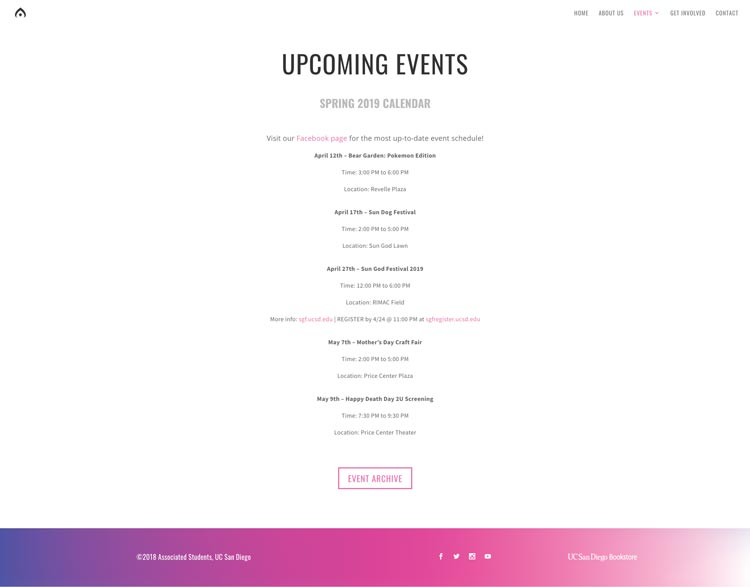

Description
ASCE, Associated Students office of Concerts & Events, is UC San Diego's student programming board responsible for some of the longest standing campus traditions. My teammate, Leo Cooperband, and I were tasked with revamping ASCE's website for a more event-driven experience by giving them a new visual identity.
Responsibility
With the general oversight of the ASCE team along with Leo's artistic vision, I was able to implement the redesign using WordPress, ASCE's current content management system, which allows authorized users to easily make minor changes to the website.
Problem Statement
The current ASCE website has a lack of focus on featuring events. When users visit ASCE, they get a glimpse of a landing page that features a decoration image that does not speak to ASCE as an events website or as a brand. In general, the homepage does not boast the most up-to-date and exciting things happening on campus, which we think is a missed opportunity.
Wireframing
Our first low-fidelity prototype features a splash page with a basic top navigation bar, a hero image, and an event slideshow displaying past and upcoming events.

We quickly realized that this initial design did not exactly feel like a permanent solution to our problem: the side scrolling interface for events made it difficult to access essential information quickly. There was also little differentiation between the importance of the content and there was room to visually improve the website in order to focus the attention on the events. As a result, providing students with quick information was our newfound focus.
Low-Fidelity Prototype
After wireframing, we began to transition our designs to a more text-based approach because it offered more professionalism and a method to effectively display information (which we lacked in our previous design). We swapped the event slideshow for a calendar list. By reformatting the events into a vertical list, we allowed room for more information by having it flow as the user scrolls. This design also self-contains each event, which improves scanability and hierarchy. Lastly, our color choice of red and tan is intended to lessen harsh contrast while having important headers stand out with excitement.
Despite our modifications, we still wanted to make changes regarding the visual branding of the site. ASCE brings in many talented artists and performers; so for our next iteration, we wanted to really highlight the talent they curate as well as the art that is commissioned for their events.
Alternate Designs
To accommodate visual artwork, we pivoted directions to include more images and really explore color combinations. Here in our alternate designs, the image collage of the musical artists is intended to draw attention to ASCE as an organization. On the other hand, we incorporated event banners for each event to give each one their unique theme. With the emphatic text, “We are ASCE”, combined with decorative images, our client was pleased with the design direction and wanted to move forward.
With our design direction established, we wanted to polish everything. First, we needed to decrease the height of each event in the calendar section in order to include more in a single view. Second, to elicit more excitement while maintaining professionalism, Leo and I discussed ways to place images more strategically. Furthermore, upon receiving student feedback on the red font-color choice, we agreed that it may hinder from a professional look and feel so we swapped it out.
Final Prototype
Based on client feedback, we continued with our image-heavy approach but made changes to the splash page. We kept the “We are ASCE” slogan but converted the splash page into an edge-to-edge slideshow, with each of ASCE's large-scale events having their own image and colored theme. The full-sized images help immerse the user into the website and set the tone for a concert and events website. We also included a small section at the bottom of the page to serve as a place for updates and other news that ASCE would like to announce.
Conclusion and Takeaways
From this redesign project, I've come to realize that design iterations are exciting change and open the doors to many possibilities but require important discussions and deliberations. It's a many-week-long process, not just a result of a few "productive days". Being inspired is one thing, but being practical with our design decisions and thinking about the impact it has on our client, ASCE, as an organization allowed us to steer this project in the right direction and made this redesign a success.